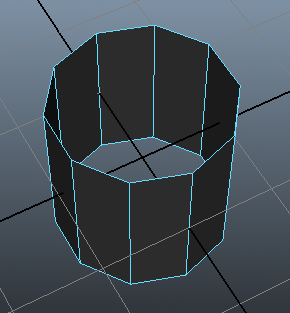
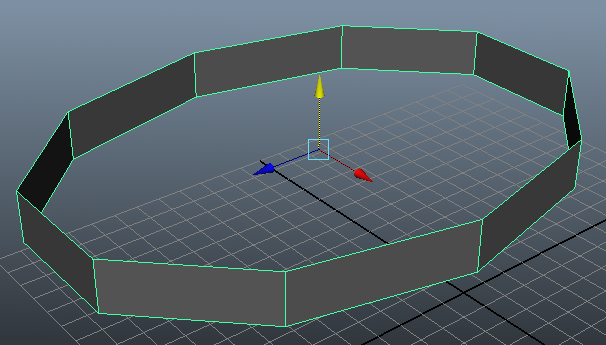
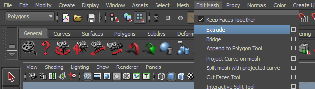
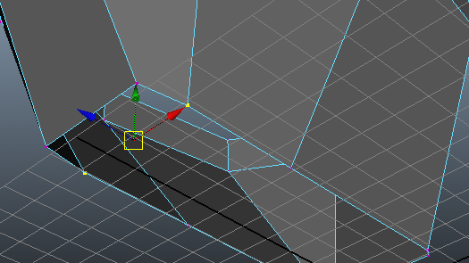
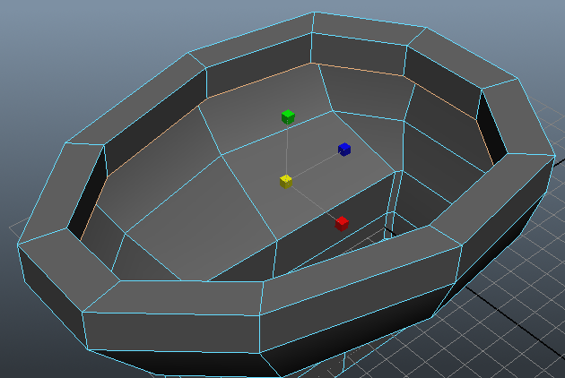
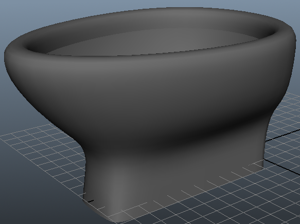
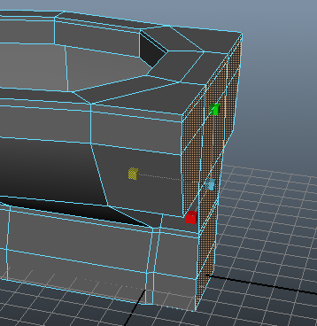
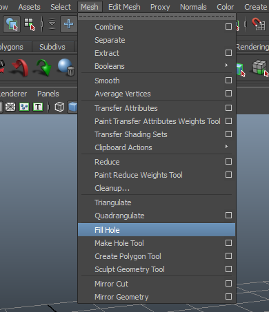
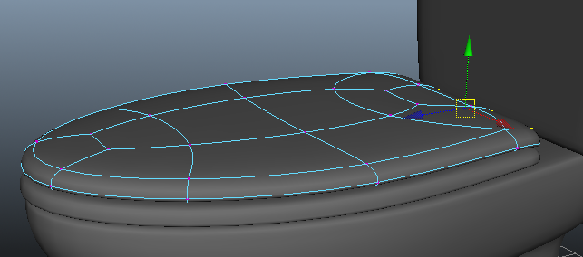

You are here HELLO: Home → Basic Modeling
Basic Modeling
The Bowl
First, create a cylinder: Create → Polygon Primitives → Cylinder.
Before we go any further. Let's get in the good habit of naming our objects. If you go open your outliner under Window->Outliner, you will see pCylinder1. If you double click the text pCylinder1, you can rename it. Let's name it bowl.
Now change the cylinder options under INPUTS in the Channel Box. To show the channel box, click the right most button in the upper right.

You may have to "unfold" the polyCylinder# area by clicking on it. Adjust the highlighted values such that we have only 10 sides and non-triangulated caps.
Switch to Face Mode by moving the mouse over the cylinder, and holding down the right mouse button. When the menu pops up, drag the mouse cursor over 'Face' and let go.
Now that you are in face mode, you can select (left-click) and delete the caps.

Use the right-click menu and select 'Object'. This goes back out into object mode. Select the cylinder (should highlight green) and move/scale the cylinder to wherever you want the top of the toilet bowl to be.

Use the right-click menu again to go into 'Vertex' mode. Adjust the vertices so that they form the shape of the bowl a little better.

Use the right-click menu to go into 'Edge' mode. Here we can double-click on one of the bottom horizontal edges to select the whole ring. We want to extrude the bottom ring downwards to make the bowl deeper:
Go to Edit Mesh → Extrude.

This will give you a weird manipulator. This manipulator doesn't always behave in an intuitive way so many people switch immediately to another tool (in this case, move tool *w*). * Then move the automatically selected edges down. However, remember when you do extrude, to always move the edges or faces as if you forget to do so, you might have two faces on top of each other that are hard to differentiate between.

Go into vertex-mode and tweak the bottom points to get a more rectangular base that many toilets tend to have.

In edge mode, do the double-click-select-edge-ring thing again, extrude the bottom edge down, and then tweak the verts on that ring.
Next we want to give it some bowl shape. This means we must add another edge-loop in the middle of the tapering portion. So with our mesh in edge mode, go to Edit Mesh → Insert Edge Loop Tool
Pick one of the vertical edges on the bowl and left mouse drag. When you let go, the loop should get added. Since that loop is already selected, you can just scale those edges out to get a more bowl-ish shape.
Then we'll want to add another loop to be the bottom of the bowl (where the bowl meets the rectangular part of the toilet). Adjust the new loop to be more-or-less flat with the base.
At the top now, let's give the lip some thickness. Select the lip and extrude, switch to scale tool and scale in. Then extrude again, switch to move tool, and move down.

So far, we've had a very sharp/polygonized, cg-looking toilet. Usually they are smooth. Maya has a smooth-preview feature that will show you a catmull-clark subdivided version of the mesh. This means it'll be much smoother. Hit *3 to switch into smooth-preview mode. Hit *2 to switch into smooth-preview with non-smooth cage. Hit *1* to switch back out of smooth-preview.

You'll notice that our smooth-preview removes some of the desired sharper corners. The technique to fixing this involves inserting edge loops close to where you want sharp edges. Whenever two loops are close together, they make a sharper corner. Let's add edge loops to sharpen corners near the top of the bowl, near the top inside the bowl, and near the bottom of the bowl. This should give us a fairly smooth bowl with sharper corners when smoothed.

Now we are going to add the rear portion of the toilet. This requires extruding faces. Unfortunately maya defaults to extruding all the faces individually which is not what we want. So, before extruding faces, go to the Edit Mesh menu and check on Keep Faces Together.
Okay, now select and extrude the faces on the back part of the toilet back further.
Flatten out the back using the scale tool to scale down along z (a nifty trick for flattening things). Hold down j before scaling and it will help flatten the surface quickly.

Extrude back once more and then tweak the shape to be however you want the back of your toilet to look.
The Tank
Our next step is to make the tank on the back. We'll start with a cube: Create another cube and put it into position. Then in the channel box again under polyCube#, change the subdivisions all to 3. This gives us enough subdivisions to have sharper corners (if we smooth now, it will be too round).
Now tweak the shape of the tank. Remember, putting edge loops close together will create a sharper corner on the smoothed mesh.
The tank needs a lid. So, instead of creating a new cube and trying to get it to look like the current tank shape, we can just duplicate the top face of the tank.
Select only the top face of tank and go to Edit Mesh → Duplicate Face. Move the new face upwards and away from the original tank.
Select those faces and extrude the faces downwards to make the tank's lid shape.
To make it fit over the tank, scale the lid up a little. Also, sharpen the top and bottom of the lid a little by adding some more loops.
Seat and Lid
Onto the toilet seat and lid! We'll use the same duplicate/delete faces trick to duplicate the top faces of the bowl's shape. Then duplicate the top shape once more to make the lid. Make sure to name them seat and lid on the outliner!

To finish up the seat, scale the inner loop more inwards and then extrude the whole shape downwards. Add a loop near the bottom for a sharper edge. Then Add some loops on the top and move them up to get a rounder shaped top (more comfy for your butt). Then tweak to your liking (maybe scale it up so it slightly overhangs the bowl or something).

Now, select the lid (unhide it if its hidden) and enter edge mode. Then select the inner edge-loop and shrink it inward a bit. A toilet lid usually doesn't have a big hole in the middle, so we need to fill that hole. Fill the hole by selecting one of those inner edges and going to Mesh → Fill Hole

You'll notice that it has filled the whole with a 10-sided face. Usually we avoid faces with this many sides because smoothing a face like this behaves unpredictably. So, let's turn that face into 4 quads.(Quads meaning quadrilaterals.) We'll use the Split Polygon tool for this Edit Mesh → Split Polygon Tool:
This tool is a little weird; here's how it works: * First, drag on an edge to add a point on that edge. Let-go of the mouse-button when the point is where you want it. We are going to take an edge and put the new point on a point that is already there. * The next point we add will get connected to this point by a new edge thus splitting the face. * Now that we are done drawing that edge, right-click (do NOT press 'enter' yet, 'enter' will finish the tool entirely). We still want to add edges but we don't want them connected to the last vertex we created. If we kept adding points, they'd keep getting connected to the previous point. By right clicking, we finish the current edge chain we are drawing, but we don't leave the tool. * Now do the same thing to draw two more edges. * Once we've finished using the tool, hit Enter to apply all the changes.


Do the same things we did to make the seat and tweak it until it looks right.

Now we have a very basic toilet-looking object (without a flusher or hinges or bowl internals or a base). It is still in separate pieces. Once you are done and plan on using the toilet as an asset (no pun intended), it is recommended to combine them into one mesh or to group all the pieces. You can combine mesh pieces by selecting them and going to Mesh → Combine. You can group the pieces by selecting them and going to Edit → Group.
Extra for Experts
Now you have a grey model. It is bland and boring and needs a spice of color. Here is a quick tutorial for coloring your models.
Select your completed toilet. Hold right click and select Assign New Material.
A window listing different materials should pop up. As you can see from this list, there are many different materials that can be assigned to your objects. We will go over two basic ones for now Lambert and Phong. More details will be provided in the Shading lab.
Lambert
The lambert material type is used to simulate flat, dull materials like plastic or clay.
Phong
The phong material type is used to simulate any sort of glossy surface because it is "shiny." Examples are metallic objects, or shinier plastics.
Now that you know a little about lamberts and phongs. In the Assign New Material window click on either lambert or phong. The Attribute Editor should then appear. It is good practice to name your shaders and that can be done in the attribute editor.
To change the color of this shader, click on Color in the Attribute Editor. A color palette will appear, from there select the color that you want.
Your toilet should now be in color! The toilet below is assigned to a red lambert.
If you chose lambert and decided phong would be a better shader for your toilet or vice versa, you can change the material type by clicking Type in the Attribute Editor. A drop down list should appear.
And if you chose to color your toilet red instead of blue, we forgive you. Remember you can change the color by selecting Color in the Attribute Editor.
The toilet is now assigned to a blue phong material. Much better!
Go ahead and have fun putting color into your world!